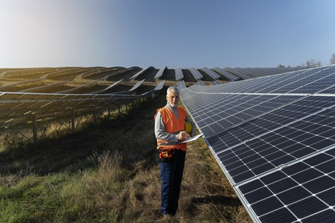

Definição
A energia fotovoltaica é o que chamamos também de energia solar, conseguimos a mesma proveniente da luz solar a partir de placas fotovoltaicas, que convertem a luz solar que recebe em energia elétrica, limpa e renovável.
Vantagens e desvantagens
A energia solar apresenta diversas vantagens, sendo a maioria aplicada ao fato de ser uma fonte sustentável, pelo fato de ser inesgotável. Além dessa vantagem, existem muitas outras como não emitir poluentes, não ter custo adicional e também é acessível em lugares remotos, apesar de tudo isso, existem poucas desvantagens, como a necessidade de um clima em específico para melhor funcionamento, baixo rendimento com custo elevado entre outras coisas.